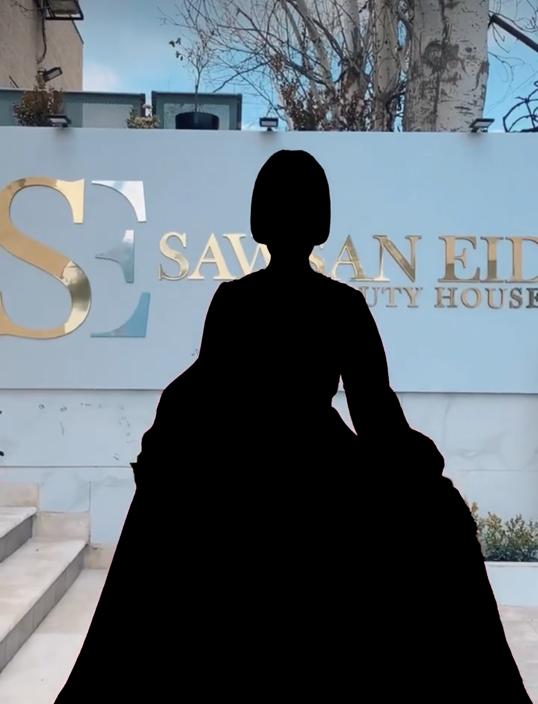
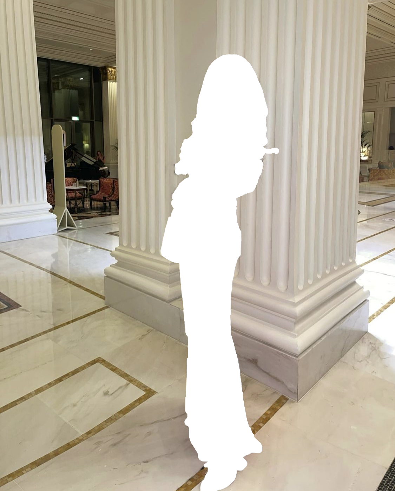
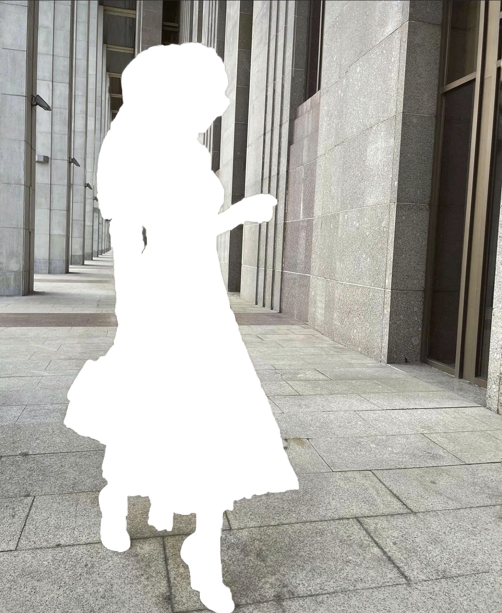
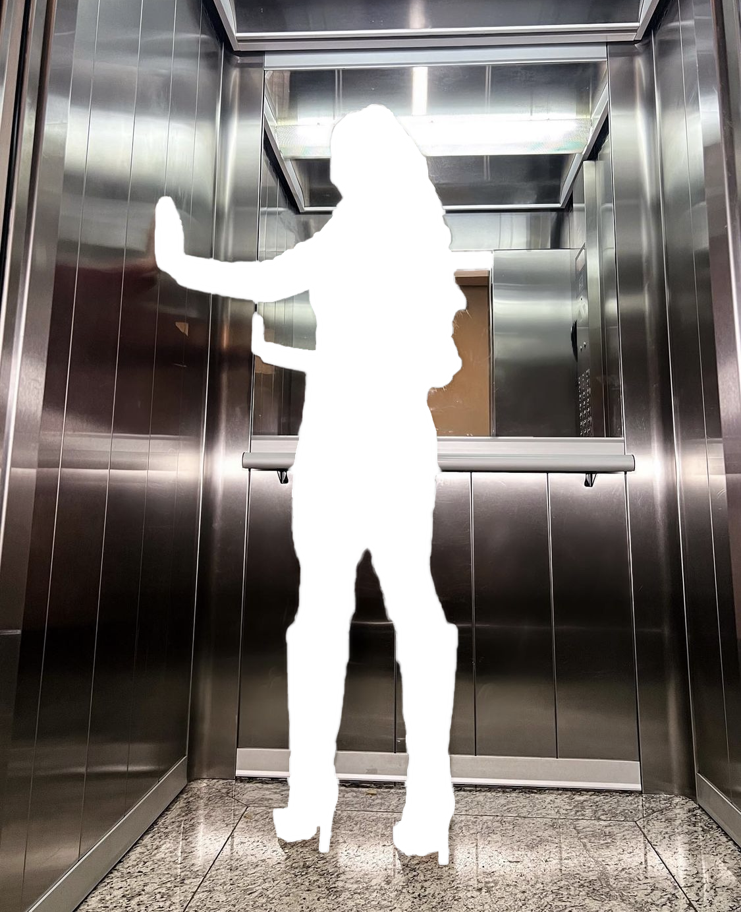

Holly Peter is a 28-year-old fashion designer who enjoys skiing and
designing her future, one dress at a time. She is energetic and reliable.
She is American and has a degree in art history.
She's a really ambitious person who believes her prime is still coming.
She's been working for years with locals designing their wedding dresses
but she wants to one day, get to dress the powerfull of our world.
What she embodies

Always dressed to kill.

Call me a hot mess, but never a fashion disaster.

No matter what style you choose to personify, be original.

The way I dress usually tells the state of my being.